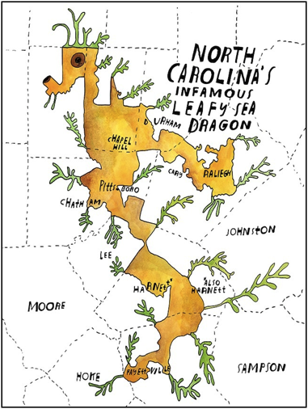

Sixty-seven-year-old David Harris has been in Durham politics for a long time.
“Since ’72, the early ‘70s, I’ve been involved at the precinct level and I’ve been on the [Democratic] state executive committee for, I don’t know, about seven or eight years,” Harris said. “I ran for city council in ’07, unsuccessful, so I’ve been pretty active in the community.”
Every second Tuesday of every month, the former software-testing engineer drives across town to a local library to attend a routine committee meeting for the Durham Democratic Party. At one of those meetings, in the fall of 2013, his neighbor, T.E. Austin, pulled him aside and asked him something out of the routine.
“[He asked] would I be willing to be the plaintiff in a redistricting case with reference to the North Carolina redistricting law,” Harris said. “That was it. That’s all he knew at the time.”
Austin was tasked with casting a wide net to find as many people as possible to represent congressional District 1 in a legal battle against state officials. A team would then review his volunteers to determine which were suitable plaintiffs by legal standards.
“I had talked to some people and they were looking at me as being one of the plaintiffs and asking if I knew other people…and David is one of the people that I came up with,” Austin said. “I was just thinking about people that I thought would be a strong advocate so that when you talk to them they make sense, they know what they’re talking about.”
“That’s it,” Harris said. “Just a name on a paper and they used my deposition to support the allegation that there was something wrong with what they did.”
Meanwhile, in Charlotte, chairwoman of the Democratic Party in District 12, Robbie Akhere, phoned an 81-year-old retired physical education teacher, Christine Bowser, and asked her to lend her name to the case.
“The gist of the conversation, that she informed me about the suit and asked me if I would be interested, and I told her I would get back with her after a couple of days thinking about it,” Bowser said.
Eventually, she agreed.
Bowser, a long-time resident of Charlotte, later said she was persuaded after being reminded of a time when Rep. Mel Watts talked about how her district, congressional District 12, was segregated from the rest of the state.
After being selected as plaintiffs, Harris and Bowser received a few phone calls and letters informing them that Edwin Speas of Poyner Spruill LLC would represent them locally while Marc Elias of Perkins Coie LLC would serve as the lead attorney from Washington D.C.
They were also assured they would have no responsibility for the legal fees.
“I mean, it’s nowhere possible anyone would think that I would have the funds to take care of a lawsuit where they pay to some of them [attorneys] $200 and $900 an hour,” Bower said.
Elias is listed on the Perkins Coie LLC website as the sole contact for the National Democratic Redistricting Trust, an obscure organization funded by numerous Democratic campaigns according to Open Secrets. He also serves as the legal counsel for Hillary Clinton’s presidential campaign.
“An organization out of Washington covered the court costs, the National Redistricting Trust covered the court costs,” Speas said.
On October 24, 2013 Harris and Bowser’s names appeared on a formal complaint against North Carolina Gov. Pat McCrory, and in April of the following year they were summoned by lawyers to answer questions in a deposition.
For them, that was about it. Life progressed as it always had after that.
“That’s it,” Harris said. “Just a name on a paper and they used my deposition to support the allegation that there was something wrong with what they did.”
Neither of them could guess that in February 2016, their case would succeed where several others had failed. It would force state Republicans to re-draw district maps and postpone primary elections by nearly three months.
Don’t reveal more than necessary
In 2011, Republicans David Harris and Bob Rucho chaired state committees to perform the routine task of using data from the recently completed 2010 U.S. Census to divide the state into 13 congressional voting districts. Neither Rucho, a former dentist, nor Lewis, a farm equipment vendor, had experience operating mapping software so they contracted legal consulting firm Ogletree Deakins to get the job done.
Ogletree Deakins then quickly hired Republican National Committee mapmaker Tom Hofeller, a divisive character in the “blood sport of redistricting”, according to an October 2010 article in The Atlantic.
With almost 50 years of experience drawing legislative and congressional maps for over half of the U.S., his maps and methods have been questioned before countless judges. At a GOP redistricting presentation just before North Carolina’s plans were drafted, he wrote, “Emails are the tool of the devil. Use personal contact or a safe phone!” and “Don’t reveal more than necessary.”
Hofeller was given an office without a phone number in the state Republican Party headquarters and a Toshiba laptop running some powerful software titled “Maptitude for Redistricting”. In addition, he was given three staff members: Dale Oldham, the Republican National Committee’s redistricting counsel; John Morgan, a Republican demographer from Virginia hired by a conservative nonprofit called Fair and Legal Redistricting; and Joel Raupe, a technician also hired by the nonprofit.
Harris and Rucho gave him strictly verbal instructions to draw Districts 12 and 4 to be “highly performing Democrat district[s],” according to Rucho in a deposition. Hofeller would later testify that they told him the most important thing was to draw the districts with a majority black voting age population.
Contorted districts drawn according to party interests (termed “gerrymandering”) are not necessarily unconstitutional. However, forming district lines that dilute the voting power of racial minorities is, according to the 1965 Voting Rights Act.
The law requires states to create “majority-minority districts” under the notion that if some congressional districts had a majority of African-American voters, it was almost certain that African-American representatives would be elected.
“Back in the 1980s and early 1990s there was sort of a rule of thumb that to have an effective district for minority voters to elect their candidates, that it needed to be 65 percent black population,” Michael Crowell, governmental law attorney and former UNC School of Government professor, said.
Creating those majority-minority districts became a lot trickier as the result of a 1993 U.S. Supreme Court case, Shaw v. Reno, which declared race should be considered when creating maps, but not the predominant factor. The majority opinion stated, “…racial gerrymander[s] may exacerbate the very patterns of racial bloc voting that majority minority districting is sometimes said to counteract.”
“That opinion…by the court outlines why it’s important that when a government is drawing district lines they don’t allow race to predominate in how they draw those lines,” Director of the Southern Coalition for Social Justice, Anita Earls, said.
When African-American populations increased by nearly six percent in North Carolina’s District 12 and almost three percent in District 1, it appeared Hofeller’s team was packing Democratic-loyal African-Americans into congressional Districts 1, 12, and 4.
“When you pack too many black voters in a district, those are the most loyal democratic voters,” Crowell said. “Republicans have long embraced the voting rights act, because they realize that the more black voters you put in minority districts, the more you isolate them, the better that is for Republican candidates in other districts.”
While Hofeller’s team drew maps, Rucho organized public meetings and webinars to hear public input before drafts of maps were even available. Many people argued that it was impossible to offer specific comments or thoughts without a visual aid, according to Durham-based IndyWeek.
“What we are here for is to basically hear your thoughts and dreams about redistricting,” Rucho told attendees. “We are not here drawing maps.”
In early July, Hofeller invited groups of Republican county representatives to his room at the Brownstone Hotel in Raleigh. There, he gave Republicans lawmakers the opportunity to request slight changes to their legislative districts.
When they were satisfied, it was passed around as a sponsored bill, revised slightly, and the map known as “Rucho-Lewis Congress 3” passed on July 27, 2011. Not a single Democrat voted in favor.
In the following months, numerous political organizations and coalitions of citizens launched lawsuits in state courts claiming that uneven racial distribution and meandering district boundary lines violated the state’s constitution.
“When it comes to redistricting, we’re at the point where everyone knows that after every round of districting there’s going to be lawsuits about it,” Crowell said.
Edwin Speas of Poyner Spruill LLC and counsel for David Harris and Christine Bowser, represented plaintiffs in one such case, Dickson v. Rucho.
“Various groups around the state were interested in these issues,” Speas said. “The first case, the Dickson case, had about eight lawyers involved, had former congressmen involved, had former legislators involved, had community activists involved. These groups come together.”
Despite the involvement of powerful political groups like the NAACP and an appeal to the U.S. Supreme Court, the state Supreme Court affirmed the maps on numerous occasions. It appeared to many that Republicans would be unstoppable in upcoming congressional elections.
The system is out of whack
A marathon of legal motions, responses, and telephone conferences followed the depositions of David Harris and Christine Bowser. Minute details were batted back and forth in a game of legal table tennis. It took an entire year for the bench trial to be scheduled in front of a panel of judges.
Finally, on February 5, 2016, a moment of clarity came.
The three-judge federal panel ruled 2-1 that “race was the predominant consideration” in drawing Districts 1 and 12 and gave Republican lawmakers just two weeks to undo the elaborately drawn maps from 2011.
Harris discovered the news when an attorney called his home that afternoon.
“He just called me and said we had won and that was about the extent of the conversation,” Harris said. “It took a while for it to sink in, because again, it had been two years or three years and almost nothing from them, you know. He was excited - he was very excited.”
State Republicans reeled from the decision, but quickly regrouped and sought a brief extension from the U.S. Supreme Court, citing the chaos it would cause in the upcoming primary elections on March 15. The court was unsympathetic and required new maps drawn immediately.
As a result, legislators drew new maps and passed the 2016 contingent congressional redistricting plan on the afternoon of February 19. Once again, not a single Democrat voted in favor of the plan. As of yet, no complaints have been filed.
In local congressional elections, the few citizens who do turnout vote with their party. Therefore, many candidates see redistricting battles as a better use of time and money than effective campaigning.
“When I, as a mapmaker, have more of an impact on an election than the voter, the system is out of whack,” Republican consultant David Winston told Slate in 2006.
In an effort to reduce that impact, states such as Arizona and California recently created bipartisan commissions. Though it is still too early to judge their success, many in North Carolina want to follow their example.
“Some states already do this, so the idea has been proposed in North Carolina for a long time,” Michael Crowell, governmental law attorney and former UNC School of Government professor, said. “It may be getting some traction.”
At least for now the process is over in North Carolina – that is, until it starts again.
Produced for COM2610 at Appalachian State University.